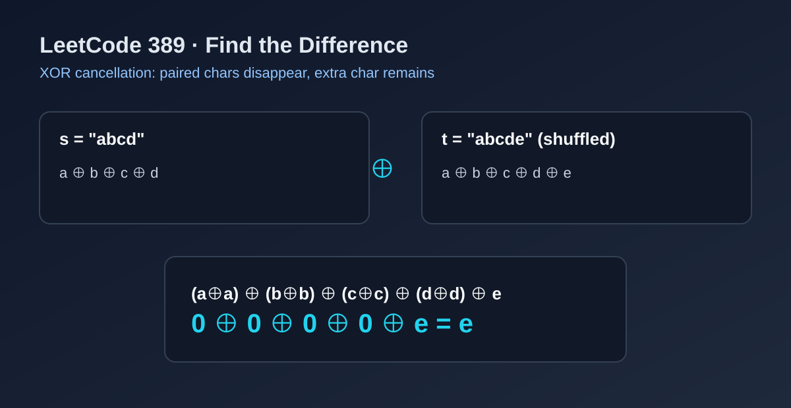

LeetCode 389: Find the Difference (XOR Cancellation / Frequency Counting)
LeetCode 389StringBit ManipulationEasyToday we solve LeetCode 389 - Find the Difference.
Source: https://leetcode.com/problems/find-the-difference/

English
Problem Summary
You are given two strings s and t. String t is formed by shuffling s and adding one extra letter. Return that extra letter.
Key Insight
XOR has a cancellation property: a ^ a = 0 and x ^ 0 = x. If we XOR all chars in s and t, all paired letters cancel out and only the extra letter remains.
Optimal Algorithm (XOR)
1) Initialize acc = 0.
2) XOR every character in s into acc.
3) XOR every character in t into acc.
4) Convert acc back to a character and return it.
Alternative Idea
A frequency-count array/hash map also works in linear time, but XOR is cleaner and uses constant extra space.
Complexity Analysis
Let n = |s| and |t| = n+1.
Time: O(n).
Space: O(1).
Common Pitfalls
- Summing char codes instead of XOR may overflow in other settings.
- Forgetting that t can be shuffled (position-based compare is unreliable).
- Returning integer code instead of converting to a character type.
Reference Implementations (Java / Go / C++ / Python / JavaScript)
class Solution {
public char findTheDifference(String s, String t) {
int acc = 0;
for (int i = 0; i < s.length(); i++) {
acc ^= s.charAt(i);
}
for (int i = 0; i < t.length(); i++) {
acc ^= t.charAt(i);
}
return (char) acc;
}
}func findTheDifference(s string, t string) byte {
var acc byte = 0
for i := 0; i < len(s); i++ {
acc ^= s[i]
}
for i := 0; i < len(t); i++ {
acc ^= t[i]
}
return acc
}class Solution {
public:
char findTheDifference(string s, string t) {
char acc = 0;
for (char c : s) acc ^= c;
for (char c : t) acc ^= c;
return acc;
}
};class Solution:
def findTheDifference(self, s: str, t: str) -> str:
acc = 0
for ch in s:
acc ^= ord(ch)
for ch in t:
acc ^= ord(ch)
return chr(acc)var findTheDifference = function(s, t) {
let acc = 0;
for (const ch of s) acc ^= ch.charCodeAt(0);
for (const ch of t) acc ^= ch.charCodeAt(0);
return String.fromCharCode(acc);
};中文
题目概述
给你两个字符串 s 和 t。t 由 s 打乱后再额外添加一个字母组成。请返回这个新增字母。
核心思路
利用异或抵消性质：a ^ a = 0，x ^ 0 = x。把 s 和 t 的所有字符都异或一遍，成对字符会被抵消，最终剩下的就是新增字符。
最优算法（异或）
1）初始化 acc = 0。
2）遍历 s，逐个字符异或到 acc。
3）遍历 t，逐个字符异或到 acc。
4）最后把 acc 转回字符并返回。
备选方案
也可以用计数数组或哈希表统计字符频次，但异或写法更简洁，且额外空间为常数。
复杂度分析
设 n = |s|，且 |t| = n+1。
时间复杂度：O(n)。
空间复杂度：O(1)。
常见陷阱
- 直接按位置比较字符，忽略了 t 是打乱后的字符串。
- 返回整数编码而不是字符。
- 写成求和方案，在某些场景会有溢出风险。
多语言参考实现（Java / Go / C++ / Python / JavaScript）
class Solution {
public char findTheDifference(String s, String t) {
int acc = 0;
for (int i = 0; i < s.length(); i++) {
acc ^= s.charAt(i);
}
for (int i = 0; i < t.length(); i++) {
acc ^= t.charAt(i);
}
return (char) acc;
}
}func findTheDifference(s string, t string) byte {
var acc byte = 0
for i := 0; i < len(s); i++ {
acc ^= s[i]
}
for i := 0; i < len(t); i++ {
acc ^= t[i]
}
return acc
}class Solution {
public:
char findTheDifference(string s, string t) {
char acc = 0;
for (char c : s) acc ^= c;
for (char c : t) acc ^= c;
return acc;
}
};class Solution:
def findTheDifference(self, s: str, t: str) -> str:
acc = 0
for ch in s:
acc ^= ord(ch)
for ch in t:
acc ^= ord(ch)
return chr(acc)var findTheDifference = function(s, t) {
let acc = 0;
for (const ch of s) acc ^= ch.charCodeAt(0);
for (const ch of t) acc ^= ch.charCodeAt(0);
return String.fromCharCode(acc);
};
Comments